Proyecto Integrador de Aprendizaje Automático#
Para el mercado de autos usados el precio de un vehículo dependen de múltiples factores. Con el uso de técnicas de Machine Learning vamos a construir modelos predictivos capaces de estimar el precio de un vehículo en función de sus características y saber si tendrá alta o baja demanda. Por ello, vamos a implementar modelos de regresión y clasificación supervisada, utilizando Ridge y Lasso, así como regresión logística. A través de un flujo completo con Pipeline y ajuste de hiperparámetros con GridSearchCV, se busca garantizar soluciones generalizables.
Esto va a ser de gran ayuda pues para los compradores y vendedores tomar decisiones rápidas y acertadas resultan importantes para evaluar de manera precisa el valor de un automóvil y su potencial. Por ello, este proyecto tiene un impacto práctico en tal pues ofrece predicciones útiles para la toma de decisiones estratégicas.
Para ello, iniciamos importando las librerias que necesitamos
import pandas as pd
import numpy as np
import matplotlib.pyplot as plt
import seaborn as sns
from sklearn.impute import SimpleImputer
from sklearn.preprocessing import StandardScaler, OneHotEncoder
from sklearn.ensemble import RandomForestRegressor
from sklearn.compose import ColumnTransformer
from sklearn.model_selection import train_test_split, cross_val_score
from sklearn.neighbors import KNeighborsRegressor, KNeighborsClassifier
from sklearn.metrics import classification_report, confusion_matrix, accuracy_score
from sklearn.decomposition import PCA
from sklearn.pipeline import Pipeline
from sklearn.metrics import precision_score, recall_score, f1_score
from sklearn.model_selection import GridSearchCV
from sklearn.linear_model import Ridge, Lasso, LogisticRegression, LinearRegression
from sklearn.metrics import (mean_absolute_error, mean_squared_error, r2_score,
confusion_matrix, classification_report, roc_auc_score, roc_curve)
import warnings
warnings.filterwarnings("ignore", category=UserWarning)
warnings.filterwarnings("ignore", category=FutureWarning)
Leemos nuestro dataset sugerido
dataset = pd.read_csv('vehicles.csv', sep=',')
El tamaño de nuestro dataset:
print("Dimensiones:", dataset.shape)
Dimensiones: (426880, 26)
Revisamos las primeras 5 filas del dataset:
dataset.head()
| id | url | region | region_url | price | year | manufacturer | model | condition | cylinders | ... | size | type | paint_color | image_url | description | county | state | lat | long | posting_date | |
|---|---|---|---|---|---|---|---|---|---|---|---|---|---|---|---|---|---|---|---|---|---|
| 0 | 7222695916 | https://prescott.craigslist.org/cto/d/prescott... | prescott | https://prescott.craigslist.org | 6000 | NaN | NaN | NaN | NaN | NaN | ... | NaN | NaN | NaN | NaN | NaN | NaN | az | NaN | NaN | NaN |
| 1 | 7218891961 | https://fayar.craigslist.org/ctd/d/bentonville... | fayetteville | https://fayar.craigslist.org | 11900 | NaN | NaN | NaN | NaN | NaN | ... | NaN | NaN | NaN | NaN | NaN | NaN | ar | NaN | NaN | NaN |
| 2 | 7221797935 | https://keys.craigslist.org/cto/d/summerland-k... | florida keys | https://keys.craigslist.org | 21000 | NaN | NaN | NaN | NaN | NaN | ... | NaN | NaN | NaN | NaN | NaN | NaN | fl | NaN | NaN | NaN |
| 3 | 7222270760 | https://worcester.craigslist.org/cto/d/west-br... | worcester / central MA | https://worcester.craigslist.org | 1500 | NaN | NaN | NaN | NaN | NaN | ... | NaN | NaN | NaN | NaN | NaN | NaN | ma | NaN | NaN | NaN |
| 4 | 7210384030 | https://greensboro.craigslist.org/cto/d/trinit... | greensboro | https://greensboro.craigslist.org | 4900 | NaN | NaN | NaN | NaN | NaN | ... | NaN | NaN | NaN | NaN | NaN | NaN | nc | NaN | NaN | NaN |
5 rows × 26 columns
Las 5 últimas filas:
dataset.tail()
| id | url | region | region_url | price | year | manufacturer | model | condition | cylinders | ... | size | type | paint_color | image_url | description | county | state | lat | long | posting_date | |
|---|---|---|---|---|---|---|---|---|---|---|---|---|---|---|---|---|---|---|---|---|---|
| 426875 | 7301591192 | https://wyoming.craigslist.org/ctd/d/atlanta-2... | wyoming | https://wyoming.craigslist.org | 23590 | 2019.0 | nissan | maxima s sedan 4d | good | 6 cylinders | ... | NaN | sedan | NaN | https://images.craigslist.org/00o0o_iiraFnHg8q... | Carvana is the safer way to buy a car During t... | NaN | wy | 33.786500 | -84.445400 | 2021-04-04T03:21:31-0600 |
| 426876 | 7301591187 | https://wyoming.craigslist.org/ctd/d/atlanta-2... | wyoming | https://wyoming.craigslist.org | 30590 | 2020.0 | volvo | s60 t5 momentum sedan 4d | good | NaN | ... | NaN | sedan | red | https://images.craigslist.org/00x0x_15sbgnxCIS... | Carvana is the safer way to buy a car During t... | NaN | wy | 33.786500 | -84.445400 | 2021-04-04T03:21:29-0600 |
| 426877 | 7301591147 | https://wyoming.craigslist.org/ctd/d/atlanta-2... | wyoming | https://wyoming.craigslist.org | 34990 | 2020.0 | cadillac | xt4 sport suv 4d | good | NaN | ... | NaN | hatchback | white | https://images.craigslist.org/00L0L_farM7bxnxR... | Carvana is the safer way to buy a car During t... | NaN | wy | 33.779214 | -84.411811 | 2021-04-04T03:21:17-0600 |
| 426878 | 7301591140 | https://wyoming.craigslist.org/ctd/d/atlanta-2... | wyoming | https://wyoming.craigslist.org | 28990 | 2018.0 | lexus | es 350 sedan 4d | good | 6 cylinders | ... | NaN | sedan | silver | https://images.craigslist.org/00z0z_bKnIVGLkDT... | Carvana is the safer way to buy a car During t... | NaN | wy | 33.786500 | -84.445400 | 2021-04-04T03:21:11-0600 |
| 426879 | 7301591129 | https://wyoming.craigslist.org/ctd/d/atlanta-2... | wyoming | https://wyoming.craigslist.org | 30590 | 2019.0 | bmw | 4 series 430i gran coupe | good | NaN | ... | NaN | coupe | NaN | https://images.craigslist.org/00Y0Y_lEUocjyRxa... | Carvana is the safer way to buy a car During t... | NaN | wy | 33.779214 | -84.411811 | 2021-04-04T03:21:07-0600 |
5 rows × 26 columns
Vemos que siguen en orden la información. Ahora vemos la naturaleza de los datos:
dataset.info()
<class 'pandas.core.frame.DataFrame'>
RangeIndex: 426880 entries, 0 to 426879
Data columns (total 26 columns):
# Column Non-Null Count Dtype
--- ------ -------------- -----
0 id 426880 non-null int64
1 url 426880 non-null object
2 region 426880 non-null object
3 region_url 426880 non-null object
4 price 426880 non-null int64
5 year 425675 non-null float64
6 manufacturer 409234 non-null object
7 model 421603 non-null object
8 condition 252776 non-null object
9 cylinders 249202 non-null object
10 fuel 423867 non-null object
11 odometer 422480 non-null float64
12 title_status 418638 non-null object
13 transmission 424324 non-null object
14 VIN 265838 non-null object
15 drive 296313 non-null object
16 size 120519 non-null object
17 type 334022 non-null object
18 paint_color 296677 non-null object
19 image_url 426812 non-null object
20 description 426810 non-null object
21 county 0 non-null float64
22 state 426880 non-null object
23 lat 420331 non-null float64
24 long 420331 non-null float64
25 posting_date 426812 non-null object
dtypes: float64(5), int64(2), object(19)
memory usage: 84.7+ MB
Vemos que hay 7 variables numéricas y 19 variables categóricas. Aplicando esta función vemos que puede haber presencia de datos faltantes, por ello vamos a ver en qué variables se están presentando dichos faltantes.
dataset.describe()
| id | price | year | odometer | county | lat | long | |
|---|---|---|---|---|---|---|---|
| count | 4.268800e+05 | 4.268800e+05 | 425675.000000 | 4.224800e+05 | 0.0 | 420331.000000 | 420331.000000 |
| mean | 7.311487e+09 | 7.519903e+04 | 2011.235191 | 9.804333e+04 | NaN | 38.493940 | -94.748599 |
| std | 4.473170e+06 | 1.218228e+07 | 9.452120 | 2.138815e+05 | NaN | 5.841533 | 18.365462 |
| min | 7.207408e+09 | 0.000000e+00 | 1900.000000 | 0.000000e+00 | NaN | -84.122245 | -159.827728 |
| 25% | 7.308143e+09 | 5.900000e+03 | 2008.000000 | 3.770400e+04 | NaN | 34.601900 | -111.939847 |
| 50% | 7.312621e+09 | 1.395000e+04 | 2013.000000 | 8.554800e+04 | NaN | 39.150100 | -88.432600 |
| 75% | 7.315254e+09 | 2.648575e+04 | 2017.000000 | 1.335425e+05 | NaN | 42.398900 | -80.832039 |
| max | 7.317101e+09 | 3.736929e+09 | 2022.000000 | 1.000000e+07 | NaN | 82.390818 | 173.885502 |
dataset.isnull().sum()
id 0
url 0
region 0
region_url 0
price 0
year 1205
manufacturer 17646
model 5277
condition 174104
cylinders 177678
fuel 3013
odometer 4400
title_status 8242
transmission 2556
VIN 161042
drive 130567
size 306361
type 92858
paint_color 130203
image_url 68
description 70
county 426880
state 0
lat 6549
long 6549
posting_date 68
dtype: int64
Nos damos cuenta que en la variable County, que está mal escrita, está llena de datos faltantes, y al no ser relevante en el estudio, es mejor eliminarla. También la variable de tamaño hay más del 70% de nulos y en VIN hay 37% de nulos. Para el url de la imagen, descripción y fecha de publicación tienen muy pocos nulos, por lo que no implican un peligro en los siguientes pasos para nuestro EDA. Y las variables como id, url, y el url de la región se podrían categorizar como irrelevantes, por lo que se pueden eliminar.
Para variables numéricas como el año y el odómetro hay aprox. un 0.3% a 1% de datos faltantes, por lo que será mejor imputar con la mediana de estas mismas. Para la latitud y la longitud se presenta un porcentaje de 1.5%, por lo que también se pueden imputar con la mediana.
Para las variables categóricas, como la manufactura, con un 4% de nulos, el modelo, con un 1.2% de nulos, el combustible, con un 0.7% de nulos, el título de estado, con un 2% de nulos, y la transmisión, con un 0.6% de nulos, se deben imputar con la moda. En las variables de condición, con un 41% de nulos se podría, el cilindraje, la conducción y el color de la puntura, o imputarlas con desconocido (unknown), o eliminarlas.
Por ello, al haber presencia de datos faltantes en la mayoría de variables, iniciamos su tratamiento para luego verificar distribución después de imputar para analizar si no se distorsionaron los datos.
total_registros = len(dataset)
faltantes_por_columna = dataset.isnull().sum()
porcentaje_faltantes = (faltantes_por_columna / total_registros) * 100
analisis_faltantes = pd.DataFrame({
'Valores_Faltantes': faltantes_por_columna,
'Porcentaje_Faltantes': porcentaje_faltantes
})
print("Análisis de faltantes:")
print(analisis_faltantes.sort_values('Porcentaje_Faltantes', ascending=False))
variables_eliminar_faltantes = analisis_faltantes[analisis_faltantes['Porcentaje_Faltantes'] > 40].index.tolist()
variables_imputar = analisis_faltantes[(analisis_faltantes['Porcentaje_Faltantes'] > 0) &
(analisis_faltantes['Porcentaje_Faltantes'] <= 40)].index.tolist()
variables_limpias = analisis_faltantes[analisis_faltantes['Porcentaje_Faltantes'] == 0].index.tolist()
print(f"Podemos eliminar esta (s) variables pues tiene un porcentaje aprox. mayor a 40% de faltantes: {len(variables_eliminar_faltantes)} variables")
print(f"Variables limpias pues tienen un porcentaje de 0% de faltantes: {len(variables_limpias)} variables")
Análisis de faltantes:
Valores_Faltantes Porcentaje_Faltantes
county 426880 100.000000
size 306361 71.767476
cylinders 177678 41.622470
condition 174104 40.785232
VIN 161042 37.725356
drive 130567 30.586347
paint_color 130203 30.501078
type 92858 21.752717
manufacturer 17646 4.133714
title_status 8242 1.930753
lat 6549 1.534155
long 6549 1.534155
model 5277 1.236179
odometer 4400 1.030735
fuel 3013 0.705819
transmission 2556 0.598763
year 1205 0.282281
description 70 0.016398
image_url 68 0.015930
posting_date 68 0.015930
url 0 0.000000
price 0 0.000000
state 0 0.000000
region_url 0 0.000000
region 0 0.000000
id 0 0.000000
Podemos eliminar esta (s) variables pues tiene un porcentaje aprox. mayor a 40% de faltantes: 4 variables
Variables limpias pues tienen un porcentaje de 0% de faltantes: 6 variables
Con las variables identificadas según su porcentaje de datos faltantes, empezamos con el tratamiento:
Primero, estudiamos las variables que para nuestro estudio pueden ser irrelevantes:
def identificar_variables_irrelevantes(dataset):
variables_irrelevantes = [
'id', 'url', 'region_url', 'image_url', 'description',
'posting_date', 'VIN', 'county', 'lat', 'long'
]
return [col for col in variables_irrelevantes if col in dataset.columns]
variables_irrelevantes = identificar_variables_irrelevantes(dataset)
print("Variables irrelevantes:")
for i, col in enumerate(variables_irrelevantes, 1):
print(f"{i}. {col}")
Variables irrelevantes:
1. id
2. url
3. region_url
4. image_url
5. description
6. posting_date
7. VIN
8. county
9. lat
10. long
Identificando hasta ahora estas variables, se escogieron por la gran cantidad de datos faltantes que tienen y su relevancia en el estudio, algunas no tienen un sentido en cuanto a la compra y venta de carros usados, o el hecho de que no son importantes para la toma de decisiones. Una de las variables que estudiamos a fondo para eliminarla fue el cilindraje. Es una caracteristica importante en los vehículos nuevos pues es una medida que indica el volumen total de los cilindros de un motor, lo cual le da mayor potencia y la eficiencia del combustible. Pero al ser este estudio en carros que ya fueron usados, y así mismo, su cilindraje ha cambiado. Estudiar esa variable no tendría un sentido dado ya que al ser usado la potencia y la eficiencia del combustible ya no será la misma, y dependerá más del estado del motor que el propio cilindraje. Por lo que procedemos a su eliminación. Este tipo de reflexiones las hicimos en las demás variables que aparecen en la lista, así sus eliminaciones harán la base esté limpia y en función al objetivo que estamos buscando:
todas_variables_eliminar = list(set(variables_eliminar_faltantes + variables_irrelevantes))
for i, var in enumerate(todas_variables_eliminar, 1):
print(f"{i}. {var}")
print(f"\nDimensiones antes de eliminar: {dataset.shape}")
dataset_clean = dataset.drop(columns=todas_variables_eliminar, errors='ignore')
print(f"Dimensiones después de eliminar: {dataset_clean.shape}")
1. url
2. description
3. size
4. condition
5. cylinders
6. VIN
7. posting_date
8. long
9. id
10. image_url
11. region_url
12. lat
13. county
Dimensiones antes de eliminar: (426880, 26)
Dimensiones después de eliminar: (426880, 13)
También se encontró datos que son inválidos en el estudio que pudieron ser por un error de escritura pues habían valores imposibles que, en un contexto real serían exageradamente imposibles, y se encontraron en las variables de año y el precio del vehículo. Por ello vamos a filtrarlos con el rango correcto:
print(f"Registros antes de filtrar: {len(dataset_clean)}")
precios_antes = len(dataset_clean)
dataset_clean = dataset_clean[(dataset_clean['price'] > 500) & (dataset_clean['price'] < 100000)]
precios_despues = len(dataset_clean)
print(f"• Precios válidos: {precios_despues} registros ({precios_antes - precios_despues} eliminados)")
años_antes = len(dataset_clean)
dataset_clean = dataset_clean[(dataset_clean['year'] >= 1980) & (dataset_clean['year'] <= 2022)]
años_despues = len(dataset_clean)
print(f"• Años válidos: {años_despues} registros ({años_antes - años_despues} eliminados)")
print(f"\nRegistros después de filtrar: {len(dataset_clean)}")
Registros antes de filtrar: 426880
• Precios válidos: 383068 registros (43812 eliminados)
• Años válidos: 373973 registros (9095 eliminados)
Registros después de filtrar: 373973
Con estas variables eliminadas, re-analizamos nuestra base:
faltantes_despues_limpieza = dataset_clean.isnull().sum()
porcentaje_faltantes_despues = (faltantes_despues_limpieza / len(dataset_clean)) * 100
analisis_despues = pd.DataFrame({
'Valores_Faltantes': faltantes_despues_limpieza,
'Porcentaje_Faltantes': porcentaje_faltantes_despues
})
variables_con_faltantes = analisis_despues[analisis_despues['Valores_Faltantes'] > 0]
print("Después de la limpieza:")
print(variables_con_faltantes.sort_values('Porcentaje_Faltantes', ascending=False))
Después de la limpieza:
Valores_Faltantes Porcentaje_Faltantes
drive 112893 30.187473
paint_color 107465 28.736032
type 78700 21.044300
manufacturer 12428 3.323235
title_status 6675 1.784888
model 3623 0.968787
fuel 2317 0.619563
odometer 2032 0.543355
transmission 1744 0.466344
Vemos ahora un porcentaje que no afecta la continuidad de nuestro estudio. Como vamos a usar Pipeline y modelos que en su construcción imputan las variables numéricas y categóricas de acuerdo a sus características, dejamos hasta aquí la limpieza.
dataset_clean['HighDemand'] = (dataset_clean['price'] > dataset_clean['price'].median()).astype(int)
Vemos cómo quedan:
print(f"Dimensión: {dataset_clean.shape}")
print(f"Rango de precios: ${dataset_clean['price'].min():,} - ${dataset_clean['price'].max():,}")
print(f"Años: {int(dataset_clean['year'].min())} - {int(dataset_clean['year'].max())}")
print(f"HighDemand: {dataset_clean['HighDemand'].value_counts().to_dict()}")
Dimensión: (373973, 14)
Rango de precios: $501 - $99,999
Años: 1980 - 2022
HighDemand: {0: 187140, 1: 186833}
Con esta base tratada para datos faltantes, hacemos un pequeño chequeo de sus características y vemos las distribuciones de nuestros datos para iniciar con el EDA.
dataset_clean.info()
<class 'pandas.core.frame.DataFrame'>
Index: 373973 entries, 27 to 426879
Data columns (total 14 columns):
# Column Non-Null Count Dtype
--- ------ -------------- -----
0 region 373973 non-null object
1 price 373973 non-null int64
2 year 373973 non-null float64
3 manufacturer 361545 non-null object
4 model 370350 non-null object
5 fuel 371656 non-null object
6 odometer 371941 non-null float64
7 title_status 367298 non-null object
8 transmission 372229 non-null object
9 drive 261080 non-null object
10 type 295273 non-null object
11 paint_color 266508 non-null object
12 state 373973 non-null object
13 HighDemand 373973 non-null int32
dtypes: float64(2), int32(1), int64(1), object(10)
memory usage: 41.4+ MB
dataset_clean.describe()
| price | year | odometer | HighDemand | |
|---|---|---|---|---|
| count | 373973.000000 | 373973.000000 | 3.719410e+05 | 373973.000000 |
| mean | 19164.113075 | 2011.986020 | 9.752785e+04 | 0.499590 |
| std | 14277.339280 | 6.404836 | 1.443943e+05 | 0.500001 |
| min | 501.000000 | 1980.000000 | 0.000000e+00 | 0.000000 |
| 25% | 7900.000000 | 2008.000000 | 3.921900e+04 | 0.000000 |
| 50% | 15950.000000 | 2013.000000 | 8.900000e+04 | 0.000000 |
| 75% | 27990.000000 | 2017.000000 | 1.372070e+05 | 1.000000 |
| max | 99999.000000 | 2022.000000 | 1.000000e+07 | 1.000000 |
También analizamos las distribuciones de las variables numéricas para ver su comportamiento puesto que están nuestras variables de interes:
numeric_cols = dataset_clean.select_dtypes(include=['int64', 'float64']).columns.tolist()
print("\nDistribución de variables numéricas:")
chunk_size = 30
for j in range(0, len(numeric_cols), chunk_size):
plt.figure(figsize=(20, 15))
for i, col in enumerate(numeric_cols[j:j+chunk_size]):
plt.subplot(6, 5, i+1)
sns.histplot(dataset_clean[col], kde=True)
plt.title(col)
plt.tight_layout()
plt.show()
Distribución de variables numéricas:
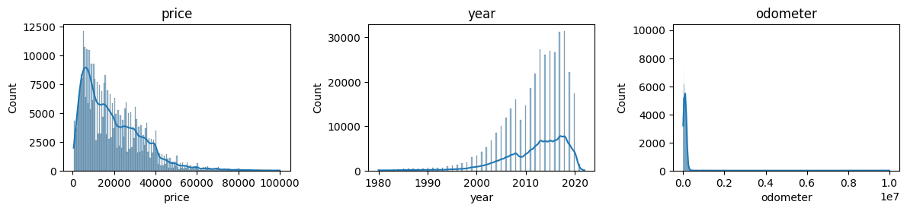
Visualizando estas distribuciones encontramos para la variable de los precios muestra que la mayoría de los autos se concentran entre \(0 y \)40,000 dólares, y los más caros llegan a costar hasta $100,000 de dólares. Para la distribución de los años vemos que es aprox. normal y centrada alrededor de 2010-2015. Hay pocos carros antiguos pues aumenta hacia años más recientes. Y para el kilometraje se ve que la gran mayoría de los carros tiene menos de 200,000 km recorridos, pero se ve un valro extremo con más de 1,000,000 km de recorrido, por lo que hay presencia de atípicos
Por ello, vamos a revisar graficamente mediante boxplots las distribuciones de estos atípicos:
def plot_outliers(dataset_clean, columns):
n_cols = len(columns)
n_rows = (n_cols + 3) // 4
plt.figure(figsize=(15, 3 * n_rows))
for i, col in enumerate(columns):
plt.subplot(n_rows, 4, i+1)
sns.boxplot(y=dataset_clean[col])
plt.title(f'Boxplot de {col}')
plt.tight_layout()
plt.show()
numeric_cols = dataset_clean.select_dtypes(include=['int64', 'float64']).columns
print(f"Número de columnas numéricas: {len(numeric_cols)}")
print("Columnas numéricas:", list(numeric_cols))
plot_outliers(dataset_clean, numeric_cols)
Número de columnas numéricas: 3
Columnas numéricas: ['price', 'year', 'odometer']
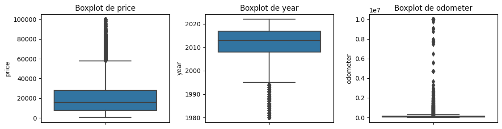
Mediante la visualización de estos boxplots podemos ver, para la distribución de precios, los atípicos están por encima de \(40,000 dólares, que representan carros que podrían ser de lujo. La mediana está alrededor de \)15,000 a 20,000 dólares, es decir, la mitad de los carros vale menos que eso. Para la variable año, la mitad de los carros salieron entre lo años 2008 a 2017 aprox. Los atípicos están por debajo del año 1995, siendo carro con más de 25 años. Y la mediana está alrededor de 2013, por lo que la mitad de los carros son de 2013 o más nuevos. Y para el kilometraje la mayoría de los carros tiene menos de 200,000 km recorridos, pero con atípicos de más de 1,000,000+ km.
Por ello, empezamos analizar las correlaciones entre estas variables.
numeric_vars = ['price', 'year', 'odometer', 'HighDemand']
correlation_matrix = dataset_clean[numeric_vars].corr()
plt.figure(figsize=(10, 8))
sns.heatmap(correlation_matrix, annot=True, cmap='coolwarm', center=0,
square=True, fmt='.2f')
plt.title('Matriz de Correlación')
plt.show()
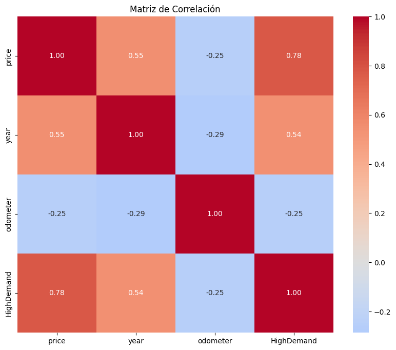
Analizamos que, para la relación entre año y precio hay correlación positiva, es decir, los carros más nuevos tienden a ser más caros. También entre kilometraje y el precio hay una correlación negativa, por lo que nos diría que los carros con más kilometraje tienden a ser más baratos pues al ser alto ese kilometraje significa más uso por el dueño pasado. Y los carros con más kilometraje tienden a tener menor demanda.
Entre la alta demanda y precio tienen una correlación positiva, es decir, los carros con alta demanda son más caros.
Entre los años y el kilometraje tienen una correlación negativa moderada pues los carros más nuevos tienden a tener menos kilometraje, y relacionandolo con la alta demanda, los carros más nuevos tienden a tener alta demanda.
Todas las variables tienen correlaciones moderadas entre los predictores.
Y para finalizar con el EDA, empezamos un análisis minucioso acerca de las relaciones y distribuciones de todas la variables. Primero, un análisis univariado:
plt.style.use('seaborn-v0_8')
sns.set_palette("husl")
plt.figure(figsize=(10, 6))
sns.histplot(dataset_clean['price'], bins=50, kde=True)
plt.title('Distribución de Precios de Autos Usados')
plt.xlabel('Precio ($)')
plt.ylabel('Frecuencia')
plt.axvline(dataset_clean['price'].median(), color='red', linestyle='--',
label=f'Mediana: ${dataset_clean["price"].median():,.0f}')
plt.legend()
plt.show()
plt.figure(figsize=(10, 6))
sns.histplot(dataset_clean['year'], bins=30, kde=True)
plt.title('Distribución de Años de Fabricación')
plt.xlabel('Año')
plt.ylabel('Frecuencia')
plt.show()
plt.figure(figsize=(10, 6))
sns.histplot(dataset_clean['odometer'], bins=50, kde=True)
plt.title('Distribución de Kilometraje')
plt.xlabel('Kilometraje')
plt.ylabel('Frecuencia')
plt.show()
plt.figure(figsize=(8, 6))
dataset_clean['HighDemand'].value_counts().plot(kind='bar')
plt.title('Distribución de HighDemand')
plt.xlabel('HighDemand')
plt.ylabel('Cantidad')
plt.xticks(rotation=0)
plt.show()
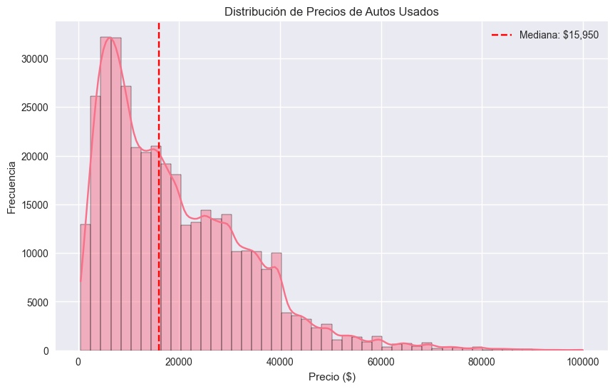
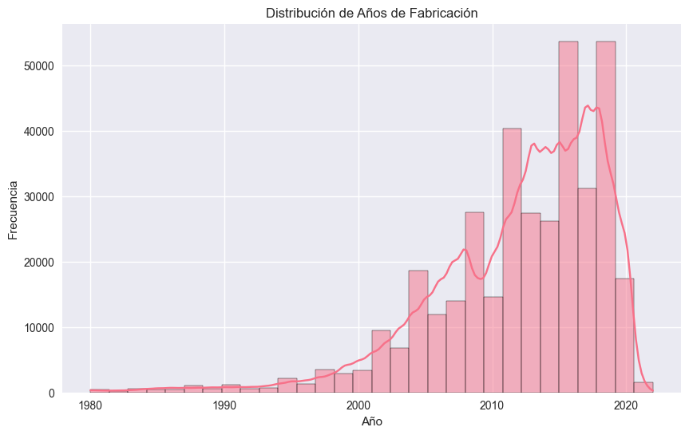
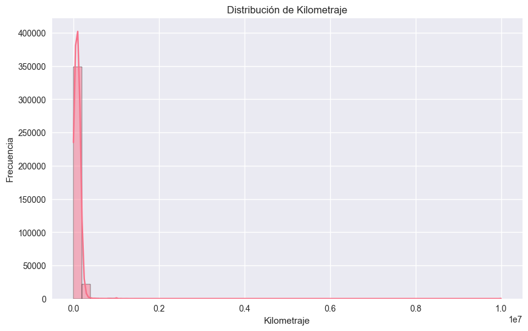
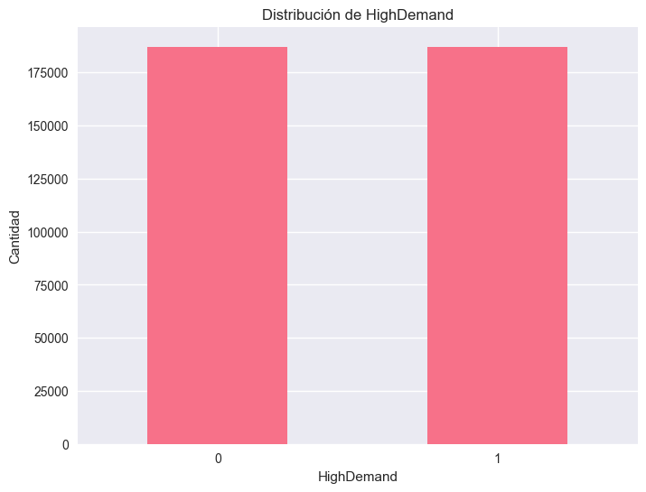
Para la primera gráfica observamos que la gran mayoría de los carros usados tienen precios por debajo de los \(20,000 dólares, y la mitad de los carros se venden por menos de \)15,950 dólares, es decir, son pocos los carros caros que se venden por su alto costo.
Para la segunda gráfica de distribución de años de fabricación vemos que hay muy pocos carros de las décadas de 1980 y 1990 en el dataset, pero aumentan a partir del año 2000, por lo que los carros usados que se venden son relativamente modernos. Pudiera decir que los carros más viejos ya se han chatarreado y son difíciles de vender.
Para la tercera gráfica de distribución de kilometraje muestra que los carros usados tienden a venderse en rangos de kilometraje como de 30,000 a 40,000 km, 70,000 a 80,000 km, o 140,000 a 150,000 km. Esto se puede interpretar en la manera de que, si el carro esttá en período de garantía o un mantenimiento mayor, las personas tienden a vender el carro para más ganancias.
Y la última gráfica de distribución de HighDemand muestra que, aproximadamente entre el 60% y el 70% de los carros están etiquetados como de Alta Demanda, es decir, la mayoría se consideran populares, se podrían venden más rápido o tienen un precio más firme.
Luego de estos análisis, pasamos a uno bivariado:
plt.figure(figsize=(12, 6))
sns.scatterplot(data=dataset_clean, x='year', y='price', alpha=0.6)
plt.title('Precio vs Año de Fabricación')
plt.xlabel('Año')
plt.ylabel('Precio ($)')
plt.show()
plt.figure(figsize=(12, 6))
sns.scatterplot(data=dataset_clean, x='odometer', y='price', alpha=0.6)
plt.title('Precio vs Kilometraje')
plt.xlabel('Kilometraje')
plt.ylabel('Precio ($)')
plt.show()
plt.figure(figsize=(12, 6))
sns.boxplot(data=dataset_clean, x='fuel', y='price')
plt.title('Precio por Tipo de Combustible')
plt.xlabel('Tipo de Combustible')
plt.ylabel('Precio ($)')
plt.xticks(rotation=45)
plt.show()
plt.figure(figsize=(10, 6))
sns.boxplot(data=dataset_clean, x='transmission', y='price')
plt.title('Precio por Tipo de Transmisión')
plt.xlabel('Transmisión')
plt.ylabel('Precio ($)')
plt.show()
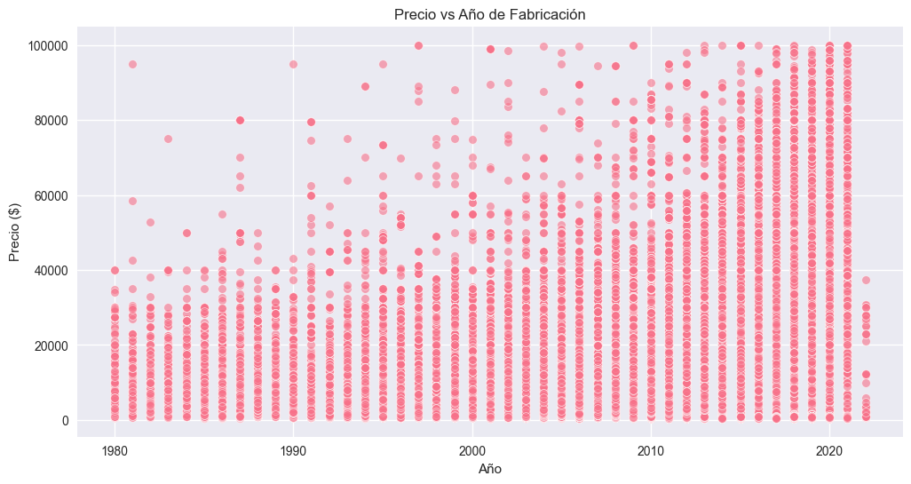
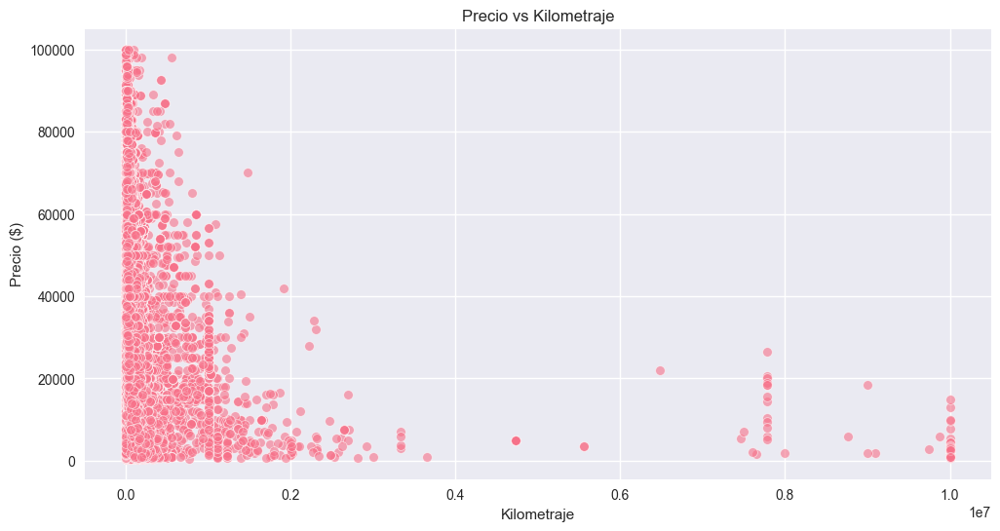
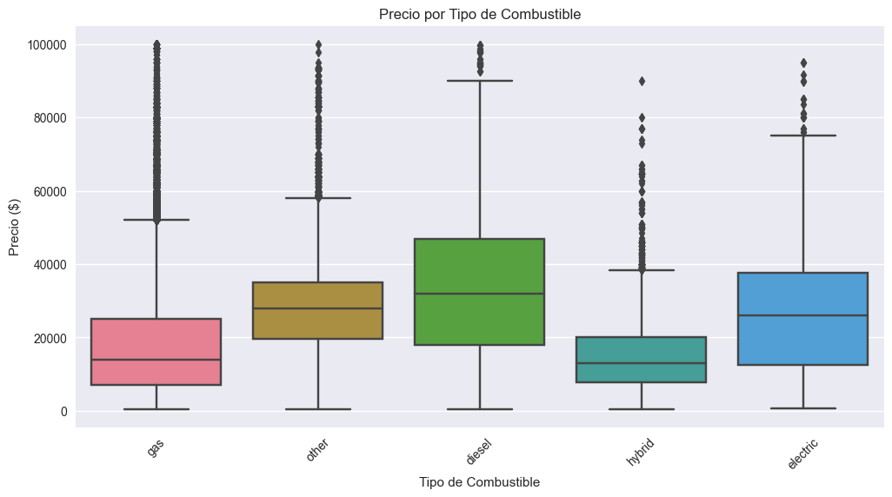
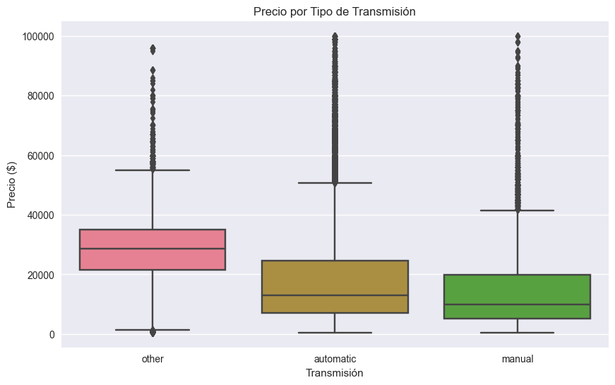
De acuerdo con lo visualizado, en el caso de la gráfica del precio con respecto al año de fabricación vemo que a medida que el año de fabricación es más reciente, el precio de venta aumenta pues los carros más nuevos valen significativamente más que los autos más viejos, con facotres como mejor tecnología, menos desgaste y más seguros para manejar. Y se tiene mucho en cuenta el año del modelo para determinar el precio del carro usado.
Para la relación de precio y kilometraje se muestra que un mayor kilometraje indicaría desgaste en el motor y otras partes del auto, lo que reduce su precio, por lo cual es clave para la valoración del carro usado.
Para la relación de precio por tipo de combustible muestra que los carros que usan el tipo de combustible 1, siendo los carros tipo eléctricos o híbrido”, tienen un precio más alto que los carros que usan del tipo combustible 0, siendo la gasolina o diésel. Por ello, los vehículos como híbridos o eléctricos suelen tener un precio de venta alto, y en la gama de usado se refleja de igual manera
Para la relacion de precio por tipo de transmisión muestra que el tipo de transmisión, como las automáticas estándar añaden valor sobre las transmisiones manuales, con un precio casi similar, y las transmisiones avanzadas se encuentran en los carros más caros.
Análisis de tops
plt.figure(figsize=(12, 6))
top_10_brands = dataset_clean['manufacturer'].value_counts().head(10)
top_10_brands.plot(kind='bar')
plt.title('Top 10 Marcas Más Comunes')
plt.xlabel('Marca')
plt.ylabel('Cantidad de Autos')
plt.xticks(rotation=45)
plt.show()
plt.figure(figsize=(12, 6))
price_by_brand = dataset_clean.groupby('manufacturer')['price'].mean().sort_values(ascending=False).head(10)
price_by_brand.plot(kind='bar')
plt.title('Top 10 de Precio Promedio por Marca')
plt.xlabel('Marca')
plt.ylabel('Precio Promedio ($)')
plt.xticks(rotation=45)
plt.show()
plt.figure(figsize=(12, 6))
dataset_clean['type'].value_counts().head(8).plot(kind='bar')
plt.title('Tipos de Vehículo Más Comunes')
plt.xlabel('Tipo de Vehículo')
plt.ylabel('Cantidad')
plt.xticks(rotation=45)
plt.show()
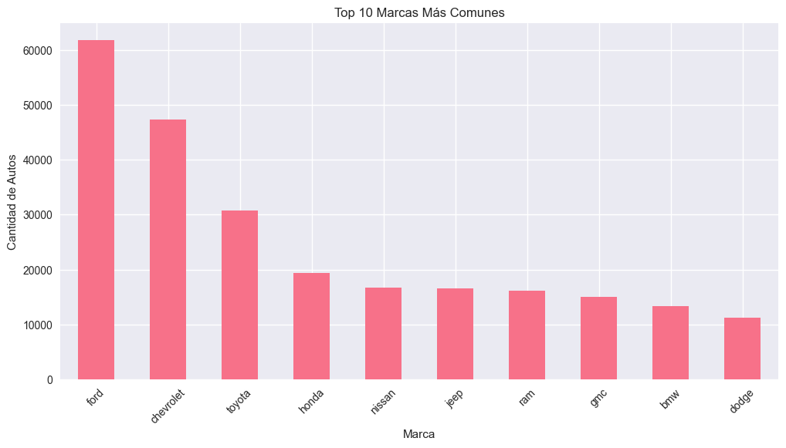
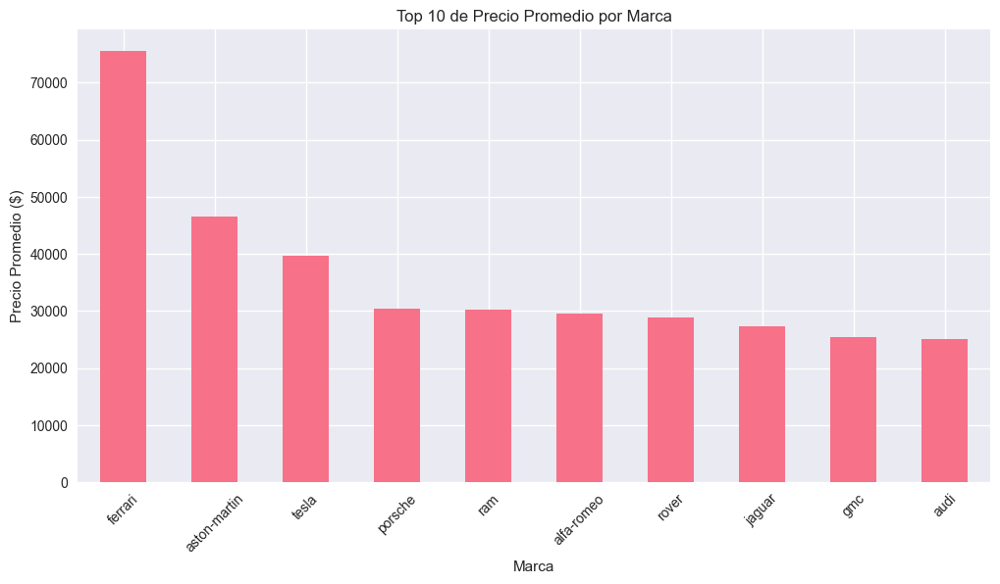
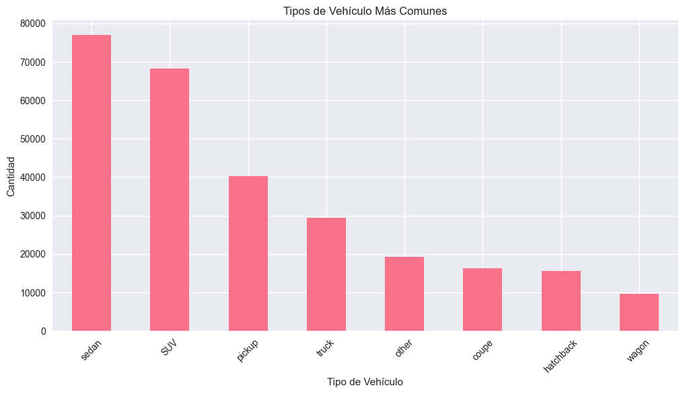
Para el gráfico del top 10 aarcas más comunes muestra que marcas como diametal, bydia, honda, riesan y jeep dominan en el mercado de carros, siendo las marcas más populares. Se puede inferir solo con esa visualización que esa la alta venta de estos carros, por lo que son los más acaparados y terminan en estas compra/venta de carros. También puede ser el gran consumo de las personas por estas marcas por su mayor oferta en precio o las varias opciones de estos tipos de carros, como el color, tipo de modelo como deportivos o casuales.
Para el gráfico de top 10 de precio promedio por marca se muestra un prestigio hacia ellas pues en el mercado son las más lujosas o con exclusividad hacia el cliente, como ferrari, porsche, land rover, y jaguar. Algo interesante es que las marcas más comunes del gráfico 1 no aparecen en este top 10 de precios altos, por lo que se nota una grán diferencia entre el precio y la exclusividad, siendo los carros más comunes en el mercado sean más vendidos. Así, las marcas de lujo tienen menos cantidad en el mercado y se venden en precios más altos.
Y para la gráfica de tipos de vehículo más comunes muestra la demanda por los tipos específicos de carrocería para carros como sedanes, SUVs y pickups son los tipos de vehículo más populares. Comparandolo con los demás gráficos vemos que ños SUVs y pickups son populares por ser más variados en cantidad y estilo, y los sedanes son más comunes por tener más volumen o cantidad en el mercado.
Analizando estas 3 gráficas podemos concluir una estrategia que pudieran estar usando los vendedores es, como el mercado está dominado por marcas comunes o de costo medio como Honda, Nissan o Jeep dán un aspecto de ser más accesibles para todos, con más opciones de estilos y un mejor costo-beneficio para el comprador. Y para marcas de lujo como Ferrari, Porsche o Jaguar ofrece un estatus de lujo y poder venderlos más caros.
Teniendo en cuenta todos los comportamientos de nuestras variables gracias al EDA podemos iniciar con construción, entrenamiento y evaluación de nuestros modelos:
numeric_features = ['year', 'odometer']
categorical_features = ['manufacturer', 'model', 'fuel', 'transmission',
'title_status', 'type', 'drive', 'paint_color', 'region', 'state']
numeric_transformer = Pipeline(steps=[
('imputer', SimpleImputer(strategy='median')),
('scaler', StandardScaler())
])
categorical_transformer = Pipeline(steps=[
('imputer', SimpleImputer(strategy='most_frequent')),
('onehot', OneHotEncoder(handle_unknown='ignore'))
])
preprocessor = ColumnTransformer(
transformers=[
('num', numeric_transformer, numeric_features),
('cat', categorical_transformer, categorical_features)
])
X = dataset_clean[numeric_features + categorical_features]
y_reg = dataset_clean['price']
y_clf = dataset_clean['HighDemand']
X_reg_train, X_reg_test, y_reg_train, y_reg_test = train_test_split(
X, y_reg, test_size=0.2, random_state=42)
X_clf_train, X_clf_test, y_clf_train, y_clf_test = train_test_split(
X, y_clf, test_size=0.2, random_state=42, stratify=y_clf)
# Ridge
ridge_pipe = Pipeline(steps=[
('preprocessor', preprocessor),
('model', Ridge())
])
# Lasso
lasso_pipe = Pipeline(steps=[
('preprocessor', preprocessor),
('model', Lasso(max_iter=10000, random_state=42))
])
# Logistic Regression
logreg_pipe = Pipeline(steps=[
('preprocessor', preprocessor),
('model', LogisticRegression())
])
Iniciamos con Ridge:
alphas = [0.1, 1, 10]
coef_dict = {}
for alpha in alphas:
ridge = Pipeline(steps=[
('preprocessor', preprocessor),
('model', Ridge(alpha=alpha))
])
ridge.fit(X_reg_train, y_reg_train)
coef_dict[alpha] = ridge.named_steps['model'].coef_
plt.figure(figsize=(12,6))
colors = {0.1: "blue", 1: "orange", 10: "green"}
for alpha, coefs in coef_dict.items():
plt.scatter(range(len(coefs)), coefs,
s=10, alpha=0.7,
color=colors[alpha],
label=f'Ridge alpha={alpha}')
plt.axhline(0, color='black', linewidth=1, linestyle='--')
plt.xlabel("Índice del Coeficiente")
plt.ylabel("Magnitud del Coeficiente")
plt.title("Efecto de Alpha en los Coeficientes de Ridge")
plt.legend()
plt.tight_layout()
plt.show()
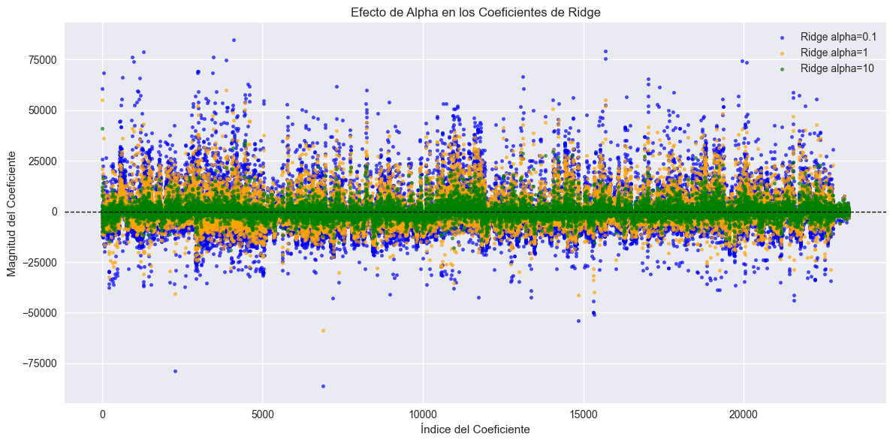
Notamos que evaluamos los respectivos alphas, 0.1, 1 y 10.
Vemos que en caso de 10 se realiza una regularizacion fuerte, lo que hace que el modelo se simplifique mucho, esto puede hacer que haya underfitting.
Ahora con el Alpha 1 vemos que hay una regularizacion moderada, haciendo que el modelo sea mas estable y generalizable, al usar 1 suele ser el punto de equilibro entre los 3 alphas que usamos. Y con Alpha 0.1 hay una regularizacion debil, aproximandose mas a una regresion lineal normal, con este alpha corremos el riesgo de sobreajustar los datos.
ridge_params = {'model__alpha': [0.1, 1, 10]}
ridge_grid = GridSearchCV(ridge_pipe, ridge_params, cv=5, scoring='r2')
ridge_grid.fit(X_reg_train, y_reg_train)
GridSearchCV(cv=5,
estimator=Pipeline(steps=[('preprocessor',
ColumnTransformer(transformers=[('num',
Pipeline(steps=[('imputer',
SimpleImputer(strategy='median')),
('scaler',
StandardScaler())]),
['year',
'odometer']),
('cat',
Pipeline(steps=[('imputer',
SimpleImputer(strategy='most_frequent')),
('onehot',
OneHotEncoder(handle_unknown='ignore'))]),
['manufacturer',
'model',
'fuel',
'transmission',
'title_status',
'type',
'drive',
'paint_color',
'region',
'state'])])),
('model', Ridge())]),
param_grid={'model__alpha': [0.1, 1, 10]}, scoring='r2')In a Jupyter environment, please rerun this cell to show the HTML representation or trust the notebook. On GitHub, the HTML representation is unable to render, please try loading this page with nbviewer.org.
GridSearchCV(cv=5,
estimator=Pipeline(steps=[('preprocessor',
ColumnTransformer(transformers=[('num',
Pipeline(steps=[('imputer',
SimpleImputer(strategy='median')),
('scaler',
StandardScaler())]),
['year',
'odometer']),
('cat',
Pipeline(steps=[('imputer',
SimpleImputer(strategy='most_frequent')),
('onehot',
OneHotEncoder(handle_unknown='ignore'))]),
['manufacturer',
'model',
'fuel',
'transmission',
'title_status',
'type',
'drive',
'paint_color',
'region',
'state'])])),
('model', Ridge())]),
param_grid={'model__alpha': [0.1, 1, 10]}, scoring='r2')Pipeline(steps=[('preprocessor',
ColumnTransformer(transformers=[('num',
Pipeline(steps=[('imputer',
SimpleImputer(strategy='median')),
('scaler',
StandardScaler())]),
['year', 'odometer']),
('cat',
Pipeline(steps=[('imputer',
SimpleImputer(strategy='most_frequent')),
('onehot',
OneHotEncoder(handle_unknown='ignore'))]),
['manufacturer', 'model',
'fuel', 'transmission',
'title_status', 'type',
'drive', 'paint_color',
'region', 'state'])])),
('model', Ridge())])ColumnTransformer(transformers=[('num',
Pipeline(steps=[('imputer',
SimpleImputer(strategy='median')),
('scaler', StandardScaler())]),
['year', 'odometer']),
('cat',
Pipeline(steps=[('imputer',
SimpleImputer(strategy='most_frequent')),
('onehot',
OneHotEncoder(handle_unknown='ignore'))]),
['manufacturer', 'model', 'fuel',
'transmission', 'title_status', 'type',
'drive', 'paint_color', 'region', 'state'])])['year', 'odometer']
SimpleImputer(strategy='median')
StandardScaler()
['manufacturer', 'model', 'fuel', 'transmission', 'title_status', 'type', 'drive', 'paint_color', 'region', 'state']
SimpleImputer(strategy='most_frequent')
OneHotEncoder(handle_unknown='ignore')
Ridge()
print("Mejor Ridge alpha:", ridge_grid.best_params_)
Mejor Ridge alpha: {'model__alpha': 0.1}
Luego de aplicar GridSearch, el cual hace es probar varias combinaciones de parametros, en este caso alphas, para cada combinacion y entrena el modelo y evalua su desempeño utilizando validacion cruzada, notamos que el mejor Alpha que nos ofrecio fue el de 0.1.
y_pred_ridge = ridge_grid.predict(X_reg_test)
print("\nRidge:")
print("MAE:", mean_absolute_error(y_reg_test, y_pred_ridge))
print("RMSE", np.sqrt(mean_squared_error(y_reg_test, y_pred_ridge)))
print("R²:", r2_score(y_reg_test, y_pred_ridge))
Ridge:
MAE: 4080.823126423401
RMSE 6740.107771208383
R²: 0.7739903528998795
plt.figure(figsize=(6,6))
sns.scatterplot(x=y_reg_test, y=y_pred_ridge, label="Ridge", color="blue")
plt.plot([y_reg_test.min(), y_reg_test.max()],
[y_reg_test.min(), y_reg_test.max()],
'k--')
plt.xlabel("Precio real")
plt.ylabel("Precio predicho")
plt.legend()
plt.show()
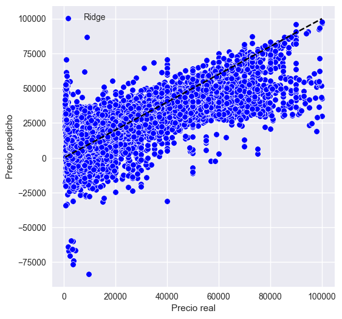
Mediante está gráfica muestra un desempeño notablemente en la predicción de precios de carros usados pues hay una clara tendencia lineal donde la mayoría de los puntos se agrupan en la línea diagonal, lo que pudiera decir la relación entre las características de los vehículos y sus precios de mercado. Se detecta una mayor dispersión en el rango de precios superiores a $60,000 dólares, por lo que el modelo podría tener problemas al predecir con precisión el el precio de los carros de gama alta.
Eso lo justifcia con el R² de 0.774, lo que dice que hay un 77.4% de la variabilidad en los precios, mientras que el error absoluto medio de $4,081 muestra que las predicciones se desvían por esta cantidad respecto al precio real, como del auto nuevo. Esta precisión pueden ser de gran ayuda para los vendedores para clasificar lo que requiere la demanda si se hace digitalmente pues se pueden poner más opciones para el cliente de lo que éste quisiera en un carro usado.
Por ello, el modelo Ridge demuestra ser efectivo para la predicción de precios de carros usados, con un desempeño en el rango de precios medios y para la mejora en carros con valor alto.
Ahora, juntamos esto con la regresión logarítmica:
logreg_params = {'model__C': [0.0001, 0.001, 0.01, 0.1, 1, 10, 100, 1000]}
logreg_grid = GridSearchCV(logreg_pipe, logreg_params, cv=5, scoring='accuracy')
logreg_grid.fit(X_clf_train, y_clf_train)
GridSearchCV(cv=5,
estimator=Pipeline(steps=[('preprocessor',
ColumnTransformer(transformers=[('num',
Pipeline(steps=[('imputer',
SimpleImputer(strategy='median')),
('scaler',
StandardScaler())]),
['year',
'odometer']),
('cat',
Pipeline(steps=[('imputer',
SimpleImputer(strategy='most_frequent')),
('onehot',
OneHotEncoder(handle_unknown='ignore'))]),
['manufacturer',
'model',
'fuel',
'transmission',
'title_status',
'type',
'drive',
'paint_color',
'region',
'state'])])),
('model', LogisticRegression())]),
param_grid={'model__C': [0.0001, 0.001, 0.01, 0.1, 1, 10, 100,
1000]},
scoring='accuracy')In a Jupyter environment, please rerun this cell to show the HTML representation or trust the notebook. On GitHub, the HTML representation is unable to render, please try loading this page with nbviewer.org.
GridSearchCV(cv=5,
estimator=Pipeline(steps=[('preprocessor',
ColumnTransformer(transformers=[('num',
Pipeline(steps=[('imputer',
SimpleImputer(strategy='median')),
('scaler',
StandardScaler())]),
['year',
'odometer']),
('cat',
Pipeline(steps=[('imputer',
SimpleImputer(strategy='most_frequent')),
('onehot',
OneHotEncoder(handle_unknown='ignore'))]),
['manufacturer',
'model',
'fuel',
'transmission',
'title_status',
'type',
'drive',
'paint_color',
'region',
'state'])])),
('model', LogisticRegression())]),
param_grid={'model__C': [0.0001, 0.001, 0.01, 0.1, 1, 10, 100,
1000]},
scoring='accuracy')Pipeline(steps=[('preprocessor',
ColumnTransformer(transformers=[('num',
Pipeline(steps=[('imputer',
SimpleImputer(strategy='median')),
('scaler',
StandardScaler())]),
['year', 'odometer']),
('cat',
Pipeline(steps=[('imputer',
SimpleImputer(strategy='most_frequent')),
('onehot',
OneHotEncoder(handle_unknown='ignore'))]),
['manufacturer', 'model',
'fuel', 'transmission',
'title_status', 'type',
'drive', 'paint_color',
'region', 'state'])])),
('model', LogisticRegression())])ColumnTransformer(transformers=[('num',
Pipeline(steps=[('imputer',
SimpleImputer(strategy='median')),
('scaler', StandardScaler())]),
['year', 'odometer']),
('cat',
Pipeline(steps=[('imputer',
SimpleImputer(strategy='most_frequent')),
('onehot',
OneHotEncoder(handle_unknown='ignore'))]),
['manufacturer', 'model', 'fuel',
'transmission', 'title_status', 'type',
'drive', 'paint_color', 'region', 'state'])])['year', 'odometer']
SimpleImputer(strategy='median')
StandardScaler()
['manufacturer', 'model', 'fuel', 'transmission', 'title_status', 'type', 'drive', 'paint_color', 'region', 'state']
SimpleImputer(strategy='most_frequent')
OneHotEncoder(handle_unknown='ignore')
LogisticRegression()
print(logreg_grid.best_params_)
{'model__C': 10}
y_pred = logreg_grid.best_estimator_.predict(X_clf_test)
y_proba = logreg_grid.best_estimator_.predict_proba(X_clf_test)[:, 1] # probas clase positiva
print("Métricas en el conjunto de prueba:")
print("Accuracy:", accuracy_score(y_clf_test, y_pred))
print("Precision:", precision_score(y_clf_test, y_pred))
print("Recall:", recall_score(y_clf_test, y_pred))
print("F1-score:", f1_score(y_clf_test, y_pred))
print("AUC-ROC:", roc_auc_score(y_clf_test, y_proba))
print("\nReporte completo:")
print(classification_report(y_clf_test, y_pred))
Métricas en el conjunto de prueba:
Accuracy: 0.9156494418076074
Precision: 0.9163494021127139
Recall: 0.9146573179543448
F1-score: 0.9155025781825487
AUC-ROC: 0.9670239522928956
Reporte completo:
precision recall f1-score support
0 0.91 0.92 0.92 37428
1 0.92 0.91 0.92 37367
accuracy 0.92 74795
macro avg 0.92 0.92 0.92 74795
weighted avg 0.92 0.92 0.92 74795
Vemos que, con un accuracy del 91.56%, el modelo clasifica más de 9 de cada 10 carros, lo que representa un nivel de precisión para administrar los precios dado que la precisión del 91.63% predice que un carrro tiene alta demanda, con el 91% de los casos esta predicción es correcta, por lo que podría minimizar los falsos positivos. Y el recall del 91.47% muestra que el modelo identifica la gran mayoría de los carros que realmente presentan alta demanda.
El F1-score del 91.55% confirma que el modelo no presenta sesgos hacia alguna clase específica de carro, sean carros de alta o baja demanda, así como el valor AUC-ROC de 96.70% también puede distinguir entre carros de alta y baja demanda.
Con esto información, podemos modelar y comparara con Lasso:
high_cardinality_features = ['model', 'manufacturer', 'region', 'paint_color']
for feature in high_cardinality_features:
if feature in X_reg_train.columns:
top_categories = X_reg_train[feature].value_counts().head(15).index
X_reg_train[feature] = X_reg_train[feature].where(
X_reg_train[feature].isin(top_categories), 'other'
)
X_reg_test[feature] = X_reg_test[feature].where(
X_reg_test[feature].isin(top_categories), 'other'
)
X_clf_train[feature] = X_clf_train[feature].where(
X_clf_train[feature].isin(top_categories), 'other'
)
X_clf_test[feature] = X_clf_test[feature].where(
X_clf_test[feature].isin(top_categories), 'other'
)
print("Columnas en X_reg_train:", list(X_reg_train.columns))
print("Columnas en X_reg_test:", list(X_reg_test.columns))
numeric_features = ['year', 'odometer']
categorical_features = ['manufacturer', 'model', 'fuel', 'transmission',
'title_status', 'type', 'drive', 'paint_color', 'region', 'state']
numeric_transformer = Pipeline(steps=[
('imputer', SimpleImputer(strategy='median')),
('scaler', StandardScaler())
])
categorical_transformer = Pipeline(steps=[
('imputer', SimpleImputer(strategy='most_frequent')),
('onehot', OneHotEncoder(handle_unknown='ignore'))
])
preprocessor = ColumnTransformer(
transformers=[
('num', numeric_transformer, numeric_features),
('cat', categorical_transformer, categorical_features)
]
)
lasso_pipe_fast = Pipeline(steps=[
('preprocessor', preprocessor),
('model', Lasso(random_state=42))
])
lasso_params_optimized = {
'model__alpha': [0.1, 1],
'model__max_iter': [500],
'model__tol': [0.1],
'model__selection': ['cyclic']
}
lasso_grid_optimized = GridSearchCV(
lasso_pipe_fast,
lasso_params_optimized,
cv=2,
scoring='r2',
n_jobs=1,
verbose=1
)
sample_size = int(0.2 * len(X_reg_train))
train_indices = np.random.choice(len(X_reg_train), sample_size, replace=False)
X_reg_train_fast = X_reg_train.iloc[train_indices]
y_reg_train_fast = y_reg_train.iloc[train_indices]
lasso_grid_optimized.fit(X_reg_train_fast, y_reg_train_fast)
print("Mejores parámetros para Lasso:", lasso_grid_optimized.best_params_)
y_pred_lasso = lasso_grid_optimized.predict(X_reg_test)
print("Resultados Lasso:")
print("MAE:", mean_absolute_error(y_reg_test, y_pred_lasso))
print("RMSE:", np.sqrt(mean_squared_error(y_reg_test, y_pred_lasso)))
print("R²:", r2_score(y_reg_test, y_pred_lasso))
print(f"Comparado con Ridge:")
print(f"Ridge R²: {r2_score(y_reg_test, y_pred_ridge):.4f}")
print(f"Lasso R²: {r2_score(y_reg_test, y_pred_lasso):.4f}")
if r2_score(y_reg_test, y_pred_lasso) > r2_score(y_reg_test, y_pred_ridge):
print("Lasso supera a Ridge")
else:
print("Ridge supera a Lasso")
Columnas en X_reg_train: ['year', 'odometer', 'manufacturer', 'model', 'fuel', 'transmission', 'title_status', 'type', 'drive', 'paint_color', 'region', 'state']
Columnas en X_reg_test: ['year', 'odometer', 'manufacturer', 'model', 'fuel', 'transmission', 'title_status', 'type', 'drive', 'paint_color', 'region', 'state']
Fitting 2 folds for each of 2 candidates, totalling 4 fits
Mejores parámetros para Lasso: {'model__alpha': 1, 'model__max_iter': 500, 'model__selection': 'cyclic', 'model__tol': 0.1}
Resultados Lasso:
MAE: 6547.356616680246
RMSE: 9398.18780744902
R²: 0.5605782649755882
Comparado con Ridge:
Ridge R²: 0.7740
Lasso R²: 0.5606
Ridge supera a Lasso
Mediantes estos resultados se destaca la diferencia en el desempeño entre los modelos Ridge y Lasso para la predicción de los precios de estos carros. El modelo Ridge muestra un rendimiento superior con un R² de 0.7740, es decir, un 77.4% de la variabilidad en los precios. Mientras que el modelo Lasso muestra un desempeño bajo con un R² de 0.5614, o sea, un 56.1% de la variación en los precios.
Entre estos dos modelos que tienen una diferencia de más de 20 puntos con una superioridad de Ridge sugiere que, para este conjunto de datos específico, la regularización L2 es más efectiva que la selección de variables mediante L1 que realiza Lasso. Esto podría deberse a que múltiples variables contribuyen de manera moderada al precio.
En conclusión, el modelo Ridge emerge claramente como la opción superior para esta aplicación específica, ofreciendo predicciones más precisas para la estimación de precios de carros usados.
Ahora, para analizar fondo la clasificación, haremos una matriz de confusión de la alta demanda:
plt.style.use('default')
sns.set_palette("Set2")
plt.figure(figsize=(12, 10))
plt.subplot(2, 2, 1)
cm = confusion_matrix(y_clf_test, y_pred)
cm_percentage = cm.astype('float') / cm.sum(axis=1)[:, np.newaxis] * 100
sns.heatmap(cm_percentage, annot=True, fmt='.1f', cmap='Blues',
xticklabels=['Baja Demanda', 'Alta Demanda'],
yticklabels=['Baja Demanda', 'Alta Demanda'])
plt.xlabel('Predicción')
plt.ylabel('Real')
plt.title('Matriz de Confusión (%)\nPrecisión por Clase')
plt.xticks(rotation=45)
plt.yticks(rotation=0)
(array([0.5, 1.5]),
[Text(0, 0.5, 'Baja Demanda'), Text(0, 1.5, 'Alta Demanda')])
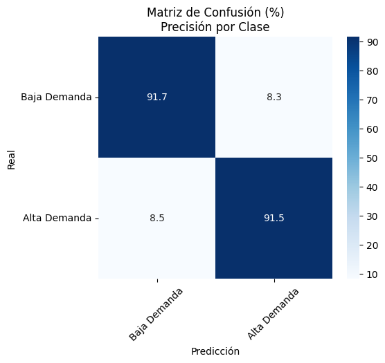
En la matriz de confusión se evidencia un desempeño alto del modelo de clasificación para predecir pues los resultados muestran qque, para alcanzar una precisión del 91.7%, se deben identficar correctamente los carros baja demanda, mientras que logra un 91.5% de acierto en la detección de carros con alta demanda. Esta mínima entre ambas clases muestra un equilibrio casi perfecto, por lo que el modelo no presenta sesgos hacia ninguna categoría.
También los errores del modelo son bajos con solo un 8.3% de falsos positivos, siendo carros clasificados erróneamente como con alta demanda, y un 8.5% de falsos negativos, siendo carros de alta demanda que no son identificados correctamente.
La consistencia en los porcentajes de acierto y error en ambas clases dice que el modelo aprendió patrones robustos y generalizables, dando así la identificación de oportunidades y negar malas inversiones para esta compra/venta de carros usados.
Curva ROC con Regresión
plt.figure(figsize=(12, 10))
fpr, tpr, thresholds = roc_curve(y_clf_test, y_proba)
roc_auc = roc_auc_score(y_clf_test, y_proba)
plt.plot(fpr, tpr, color='darkorange', lw=2, label=f'ROC curve (AUC = {roc_auc:.3f})')
plt.plot([0, 1], [0, 1], color='navy', lw=2, linestyle='--', label='Clasificador Aleatorio')
plt.fill_between(fpr, tpr, alpha=0.3, color='darkorange')
plt.xlabel('False Positive Rate')
plt.ylabel('True Positive Rate')
plt.title('Curva ROC - Logistic Regression')
plt.legend(loc='lower right')
plt.grid(True, alpha=0.3)
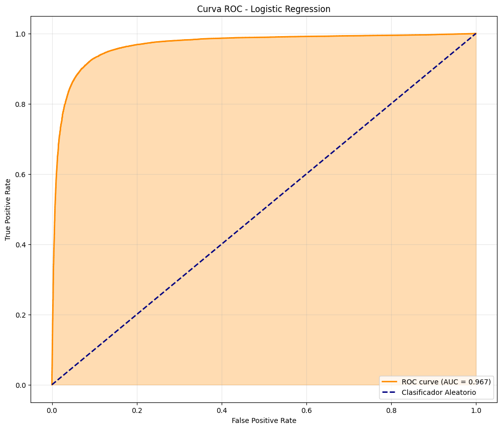
Curva ROC Precision-Recall
from sklearn.metrics import precision_recall_curve, average_precision_score
plt.figure(figsize=(12, 10))
precision, recall, _ = precision_recall_curve(y_clf_test, y_proba)
avg_precision = average_precision_score(y_clf_test, y_proba)
plt.plot(recall, precision, color='green', lw=2, label=f'Precision-Recall (AP = {avg_precision:.3f})')
plt.fill_between(recall, precision, alpha=0.3, color='green')
plt.xlabel('Recall')
plt.ylabel('Precision')
plt.title('Curva Precision-Recall')
plt.legend(loc='upper right')
plt.grid(True, alpha=0.3)
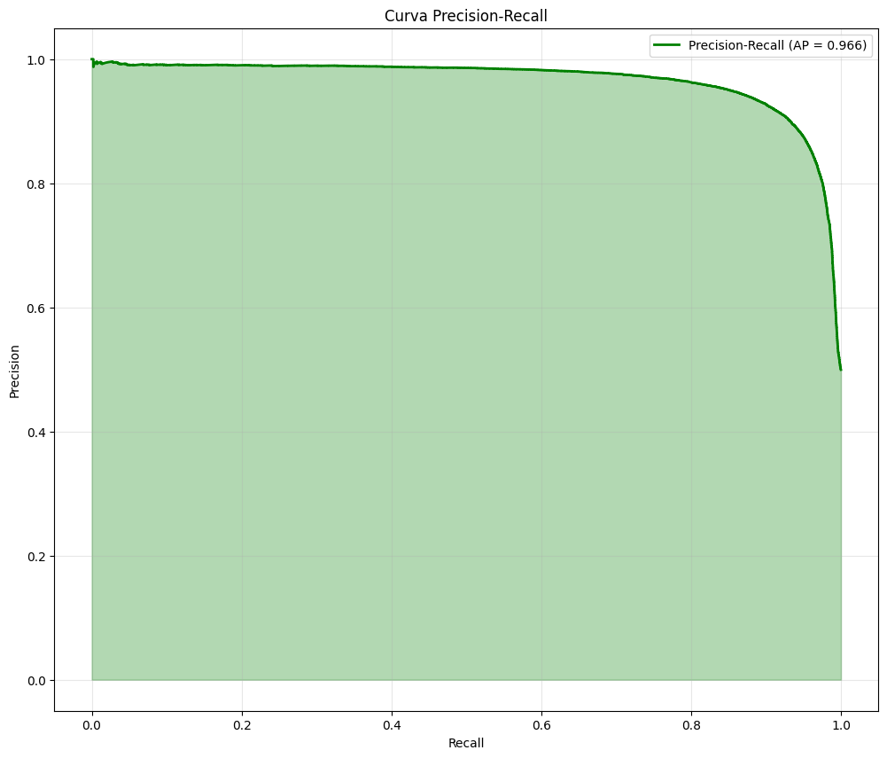
# 4. DISTRIBUCIÓN DE PROBABILIDADES
plt.figure(figsize=(12, 10))
# Separar probabilidades por clase real
proba_class_0 = y_proba[y_clf_test == 0]
proba_class_1 = y_proba[y_clf_test == 1]
plt.hist(proba_class_0, bins=30, alpha=0.7, label='Baja Demanda (Real)', color='blue')
plt.hist(proba_class_1, bins=30, alpha=0.7, label='Alta Demanda (Real)', color='red')
plt.axvline(0.5, color='black', linestyle='--', label='Umbral 0.5')
plt.xlabel('Probabilidad Predicha de Alta Demanda')
plt.ylabel('Frecuencia')
plt.title('Distribución de Probabilidades por Clase Real')
plt.legend()
plt.grid(True, alpha=0.3)
plt.tight_layout()
plt.show()
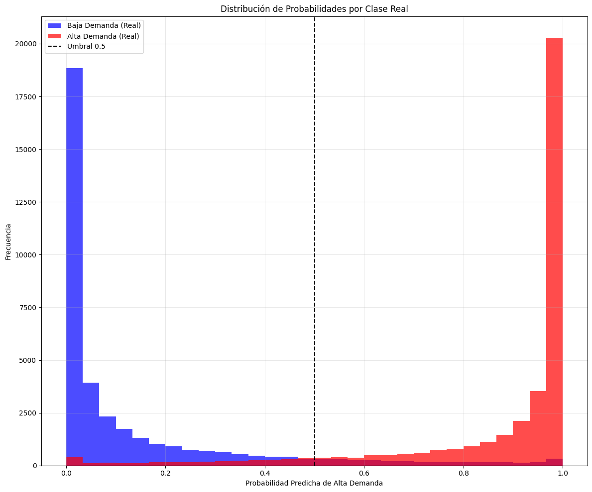
Umbrales óptimos
plt.figure(figsize=(15, 5))
distances = np.sqrt(fpr**2 + (1-tpr)**2)
optimal_idx = np.argmin(distances)
optimal_threshold = thresholds[optimal_idx]
plt.subplot(1, 3, 1)
plt.plot(thresholds, fpr, label='False Positive Rate', color='red')
plt.plot(thresholds, tpr, label='True Positive Rate', color='blue')
plt.axvline(optimal_threshold, color='black', linestyle='--', label=f'Umbral óptimo: {optimal_threshold:.2f}')
plt.xlabel('Umbral de Clasificación')
plt.ylabel('Tasa')
plt.title('Tasas por Umbral de Clasificación')
plt.legend()
plt.grid(True, alpha=0.3)
# COMPARACIÓN DE MÉTRICAS POR UMBRAL
from sklearn.metrics import precision_recall_curve
precisions, recalls, thresholds_pr = precision_recall_curve(y_clf_test, y_proba)
plt.subplot(1, 3, 2)
plt.plot(thresholds_pr, precisions[:-1], label='Precision', color='green')
plt.plot(thresholds_pr, recalls[:-1], label='Recall', color='orange')
plt.axvline(optimal_threshold, color='black', linestyle='--', label=f'Umbral óptimo: {optimal_threshold:.2f}')
plt.xlabel('Umbral de Clasificación')
plt.ylabel('Métrica')
plt.title('Precision y Recall por Umbral')
plt.legend()
plt.grid(True, alpha=0.3)
# F1-SCORE POR UMBRAL
f1_scores = 2 * (precisions * recalls) / (precisions + recalls + 1e-10)
plt.subplot(1, 3, 3)
plt.plot(thresholds_pr, f1_scores[:-1], label='F1-Score', color='purple')
optimal_f1_idx = np.argmax(f1_scores[:-1])
optimal_f1_threshold = thresholds_pr[optimal_f1_idx]
plt.axvline(optimal_f1_threshold, color='black', linestyle='--', label=f'Umbral F1 óptimo: {optimal_f1_threshold:.2f}')
plt.xlabel('Umbral de Clasificación')
plt.ylabel('F1-Score')
plt.title('F1-Score por Umbral')
plt.legend()
plt.grid(True, alpha=0.3)
plt.tight_layout()
plt.show()
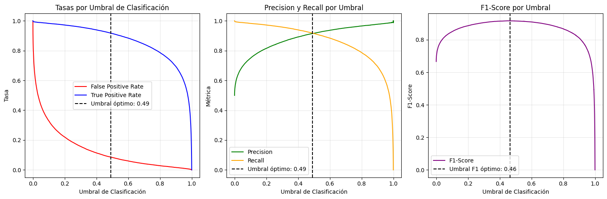
results_df = X_clf_test.copy()
results_df['HighDemand_Real'] = y_clf_test.values
results_df['HighDemand_Pred'] = y_pred
results_df['Probabilidad'] = y_proba
results_df['Error'] = results_df['HighDemand_Real'] != results_df['HighDemand_Pred']
print("Análisis de errores con clasificación")
print(f"Total de errores: {results_df['Error'].sum()} de {len(results_df)} ({results_df['Error'].mean()*100:.1f}%)")
false_positives = ((results_df['HighDemand_Real'] == 0) & (results_df['HighDemand_Pred'] == 1)).sum()
false_negatives = ((results_df['HighDemand_Real'] == 1) & (results_df['HighDemand_Pred'] == 0)).sum()
print(f"Falsos Positivos: {false_positives} ({false_positives/len(results_df)*100:.1f}%)")
print(f"Falsos Negativos: {false_negatives} ({false_negatives/len(results_df)*100:.1f}%)")
plt.figure(figsize=(12, 5))
plt.subplot(1, 2, 1)
fp_proba = results_df[(results_df['HighDemand_Real'] == 0) & (results_df['HighDemand_Pred'] == 1)]['Probabilidad']
fn_proba = results_df[(results_df['HighDemand_Real'] == 1) & (results_df['HighDemand_Pred'] == 0)]['Probabilidad']
plt.hist(fp_proba, bins=20, alpha=0.7, label='Falsos Positivos', color='red')
plt.hist(fn_proba, bins=20, alpha=0.7, label='Falsos Negativos', color='blue')
plt.axvline(0.5, color='black', linestyle='--')
plt.xlabel('Probabilidad Predicha')
plt.ylabel('Frecuencia')
plt.title('Distribución de Probabilidades en Errores')
plt.legend()
plt.grid(True, alpha=0.3)
print("Métricas por clase")
report = classification_report(y_clf_test, y_pred, target_names=['Baja Demanda', 'Alta Demanda'], output_dict=True)
report_df = pd.DataFrame(report).transpose().round(4)
print("Métricas por clase:")
print(report_df)
Análisis de errores con clasificación
Total de errores: 6309 de 74795 (8.4%)
Falsos Positivos: 3120 (4.2%)
Falsos Negativos: 3189 (4.3%)
Métricas por clase
Métricas por clase:
precision recall f1-score support
Baja Demanda 0.9150 0.9166 0.9158 37428.0000
Alta Demanda 0.9163 0.9147 0.9155 37367.0000
accuracy 0.9156 0.9156 0.9156 0.9156
macro avg 0.9157 0.9156 0.9156 74795.0000
weighted avg 0.9157 0.9156 0.9156 74795.0000
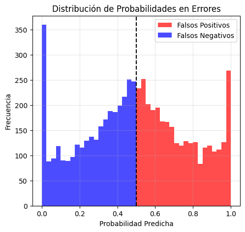
from sklearn.metrics import (mean_absolute_error, mean_squared_error, r2_score,
confusion_matrix, classification_report, roc_auc_score, roc_curve,
precision_score, recall_score, f1_score, accuracy_score)
#(RIDGE vs LASSO)
# =============================================================================
print("Ridge vs Lasso")
regression_results = pd.DataFrame({
'Model': ['Ridge', 'Lasso'],
'MAE': [
mean_absolute_error(y_reg_test, y_pred_ridge),
mean_absolute_error(y_reg_test, y_pred_lasso)
],
'RMSE': [
np.sqrt(mean_squared_error(y_reg_test, y_pred_ridge)),
np.sqrt(mean_squared_error(y_reg_test, y_pred_lasso))
],
'R2': [
r2_score(y_reg_test, y_pred_ridge),
r2_score(y_reg_test, y_pred_lasso)
]
})
try:
if 'y_pred_linear' in locals():
regression_results = pd.DataFrame({
'Model': ['Ridge', 'Lasso', 'Linear Regression'],
'MAE': [
mean_absolute_error(y_reg_test, y_pred_ridge),
mean_absolute_error(y_reg_test, y_pred_lasso),
mean_absolute_error(y_reg_test, y_pred_linear)
],
'RMSE': [
np.sqrt(mean_squared_error(y_reg_test, y_pred_ridge)),
np.sqrt(mean_squared_error(y_reg_test, y_pred_lasso)),
np.sqrt(mean_squared_error(y_reg_test, y_pred_linear))
],
'R2': [
r2_score(y_reg_test, y_pred_ridge),
r2_score(y_reg_test, y_pred_lasso),
r2_score(y_reg_test, y_pred_linear)
]
})
except:
print("Solo Ridge y Lasso")
print(regression_results.round(4))
Ridge vs Lasso
Model MAE RMSE R2
0 Ridge 4080.8231 6740.1078 0.7740
1 Lasso 6547.3566 9398.1878 0.5606
print("Mejor modelo para regresión")
best_reg_model = regression_results.loc[regression_results['R2'].idxmax()]
print(f" Mejor modelo: {best_reg_model['Model']}")
print(f" R²: {best_reg_model['R2']:.4f}")
print(f" MAE: ${best_reg_model['MAE']:.2f}")
print(f" RMSE: ${best_reg_model['RMSE']:.2f}")
print("Para regularizar con Ridge")
try:
ridge_train_score = ridge_grid.score(X_reg_train, y_reg_train)
ridge_test_score = ridge_grid.score(X_reg_test, y_reg_test)
ridge_diff = abs(ridge_train_score - ridge_test_score)
print(f"Ridge - Train R²: {ridge_train_score:.4f}, Test R²: {ridge_test_score:.4f}")
print(f"Ridge - Diferencia: {ridge_diff:.4f}")
except Exception as e:
print(f"Error evaluando Ridge: {e}")
print("Para regularizar con Lasso")
try:
lasso_train_score = lasso_grid_optimized.score(X_reg_train_fast, y_reg_train_fast)
lasso_test_score = lasso_grid_optimized.score(X_reg_test, y_reg_test)
lasso_diff = abs(lasso_train_score - lasso_test_score)
print(f"Lasso - Train R²: {lasso_train_score:.4f}, Test R²: {lasso_test_score:.4f}")
print(f"Lasso - Diferencia: {lasso_diff:.4f}")
except Exception as e:
print(f"Error evaluando Lasso: {e}")
Mejor modelo para regresión
Mejor modelo: Ridge
R²: 0.7740
MAE: $4080.82
RMSE: $6740.11
Para regularizar con Ridge
Ridge - Train R²: 0.3843, Test R²: 0.3754
Ridge - Diferencia: 0.0089
Para regularizar con Lasso
Lasso - Train R²: 0.5787, Test R²: 0.5609
Lasso - Diferencia: 0.0178
print("Variables importantes para Lasso")
try:
lasso_model = lasso_grid_optimized.best_estimator_.named_steps['model']
lasso_coef = lasso_model.coef_
feature_importance = pd.DataFrame({
'feature': [f'feature_{i}' for i in range(len(lasso_coef))],
'coefficient': lasso_coef,
'abs_importance': np.abs(lasso_coef)
})
top_10_features = feature_importance.nlargest(10, 'abs_importance')
print("Top 10 variables más importantes para predecir precio:")
print("-" * 50)
for i, (_, row) in enumerate(top_10_features.iterrows(), 1):
effect = "AUMENTA" if row['coefficient'] > 0 else "DISMINUYE"
print(f"{i:2d}. {row['feature']}:")
print(f" {effect} el precio (coeficiente: {row['coefficient']:.4f})")
except Exception as e:
print(f"Error en análisis de variables: {e}")
Variables importantes para Lasso
Top 10 variables más importantes para predecir precio:
--------------------------------------------------
1. feature_32:
AUMENTA el precio (coeficiente: 12285.2383)
2. feature_47:
DISMINUYE el precio (coeficiente: -8489.4150)
3. feature_0:
AUMENTA el precio (coeficiente: 7500.5015)
4. feature_23:
DISMINUYE el precio (coeficiente: -5669.4401)
5. feature_48:
AUMENTA el precio (coeficiente: 5376.5352)
6. feature_8:
DISMINUYE el precio (coeficiente: -5048.4803)
7. feature_31:
AUMENTA el precio (coeficiente: 4994.8181)
8. feature_50:
DISMINUYE el precio (coeficiente: -4688.1780)
9. feature_137:
AUMENTA el precio (coeficiente: 4486.7585)
10. feature_42:
AUMENTA el precio (coeficiente: 4419.5788)
plt.style.use('default')
sns.set_palette("husl")
try:
fig, axes = plt.subplots(2, 2, figsize=(15, 12))
# Subplot 1: Comparación Ridge vs Lasso
axes[0, 0].scatter(y_reg_test, y_pred_ridge, alpha=0.6, label='Ridge', color='blue')
axes[0, 0].scatter(y_reg_test, y_pred_lasso, alpha=0.6, label='Lasso', color='red')
axes[0, 0].plot([y_reg_test.min(), y_reg_test.max()],
[y_reg_test.min(), y_reg_test.max()], 'k--', lw=2)
axes[0, 0].set_xlabel('Precio Real ($)')
axes[0, 0].set_ylabel('Precio Predicho ($)')
axes[0, 0].set_title('Comparación: Ridge vs Lasso')
axes[0, 0].legend()
axes[0, 0].grid(True, alpha=0.3)
# Subplot 2: Distribución de errores
errors_ridge = y_reg_test - y_pred_ridge
errors_lasso = y_reg_test - y_pred_lasso
axes[0, 1].hist(errors_ridge, bins=50, alpha=0.7, label='Ridge', color='blue')
axes[0, 1].hist(errors_lasso, bins=50, alpha=0.7, label='Lasso', color='red')
axes[0, 1].axvline(0, color='black', linestyle='--')
axes[0, 1].set_xlabel('Error de Predicción ($)')
axes[0, 1].set_ylabel('Frecuencia')
axes[0, 1].set_title('Distribución de Errores')
axes[0, 1].legend()
axes[0, 1].grid(True, alpha=0.3)
# Subplot 3: Matriz de confusión para clasificación
cm = confusion_matrix(y_clf_test, y_pred)
sns.heatmap(cm, annot=True, fmt='d', cmap='Blues', ax=axes[1, 0])
axes[1, 0].set_xlabel('Predicción')
axes[1, 0].set_ylabel('Real')
axes[1, 0].set_title('Matriz de Confusión - HighDemand')
# Subplot 4: Curva ROC para clasificación
fpr, tpr, _ = roc_curve(y_clf_test, y_proba)
roc_auc = roc_auc_score(y_clf_test, y_proba)
axes[1, 1].plot(fpr, tpr, color='darkorange', lw=2, label=f'ROC (AUC = {roc_auc:.3f})')
axes[1, 1].plot([0, 1], [0, 1], color='navy', lw=2, linestyle='--', label='Aleatorio')
axes[1, 1].set_xlabel('False Positive Rate')
axes[1, 1].set_ylabel('True Positive Rate')
axes[1, 1].set_title('Curva ROC - HighDemand')
axes[1, 1].legend()
axes[1, 1].grid(True, alpha=0.3)
plt.tight_layout()
plt.show()
except Exception as e:
plt.figure(figsize=(10, 5))
plt.scatter(y_reg_test, y_pred_ridge, alpha=0.5, label='Ridge')
plt.scatter(y_reg_test, y_pred_lasso, alpha=0.5, label='Lasso')
plt.plot([y_reg_test.min(), y_reg_test.max()],
[y_reg_test.min(), y_reg_test.max()], 'k--')
plt.xlabel('Precio Real')
plt.ylabel('Precio Predicho')
plt.title('Comparación Ridge vs Lasso')
plt.legend()
plt.show()
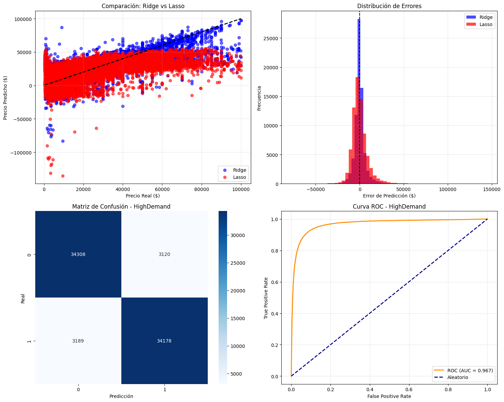
print("Métricas de clasificación con HighDemand:")
print(f"Accuracy: {accuracy_score(y_clf_test, y_pred):.4f}")
print(f"Precision: {precision_score(y_clf_test, y_pred):.4f}")
print(f"Recall: {recall_score(y_clf_test, y_pred):.4f}")
print(f"F1-Score: {f1_score(y_clf_test, y_pred):.4f}")
print(f"AUC-ROC: {roc_auc_score(y_clf_test, y_proba):.4f}")
print(classification_report(y_clf_test, y_pred,
target_names=['Baja Demanda', 'Alta Demanda']))
Métricas de clasificación con HighDemand:
Accuracy: 0.9156
Precision: 0.9163
Recall: 0.9147
F1-Score: 0.9155
AUC-ROC: 0.9670
precision recall f1-score support
Baja Demanda 0.91 0.92 0.92 37428
Alta Demanda 0.92 0.91 0.92 37367
accuracy 0.92 74795
macro avg 0.92 0.92 0.92 74795
weighted avg 0.92 0.92 0.92 74795